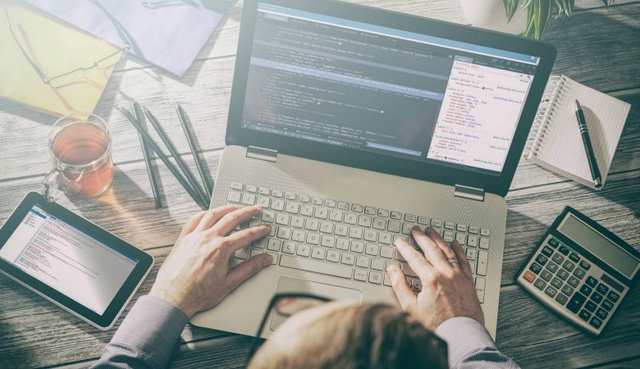

cursos
Gestão de Projetos
.jpg)
A Gestão de Projetos é a aplicação de habilidades e técnicas com o objetivo de atingir metas, obedecendo
prazos e levando em consideração os custos e a qualidade final.
Operador de Microcomputador

O Curso de Operador de Microcomputador – Básico ao Avançado capacita o
aluno a se tornar Técnico em computadores tanto na parte de hardware
quanto na de software programação! O conteúdo vai desde o iniciante até
as técnicas mais precisas para realizar manutenções ou mesmo montar
computadores.
Auxiliar Administrativo

O Curso de Operador de Microcomputador – Básico ao Avançado capacita o
aluno a se tornar Técnico em computadores tanto na parte de hardware
quanto na de software programação! O conteúdo vai desde o iniciante até
as técnicas mais precisas para realizar manutenções ou mesmo montar
computadores.
Assistente de Recursos Humanos
.jpg)
Um Assistente de Recursos Humanos presta assistência ao analista na
promoção de treinamentos e capacitações para os funcionários,
administração dos salários e benefícios oferecidos e também promove
avaliações de desempenho, planejamento de carreira e otimização do
tempo, sempre prezando para o desenvolvimento pessoal e profissional dos
funcionários e pela satisfação e saúde no trabalho.
Mantenedor de Hardware e Software

O Curso de Qualificação Profissional Mantenedor Assistente de Microcomputadores tem por objetivo o desenvolvimento de competências relativas à montagem e configuração de computadores, tendo em vista o atendimento às necessidades dos clientes no que se refere a solução de problemas com hardware de computadores.
Redes

o Técnico em Redes de Computadores é o profissional que monta, configura e faz a manutenção de computadores em rede. Ele também realiza a instalação e a configuração de dispositivos de comunicação digital e de sistemas operacionais.
FRONT-END

Durante o curso você aprenderá a trabalhar com HTML, CSS, JavaScript e suas bibliotecas como React e outras ferramentas essenciais. Em apenas seis meses, você se transformará em um especialista qualificado com um portfólio impressionante.
BACK-AND
.jpg)
O curso de Desenvolvimento Back-End tem o objetivo de formar profissionais aptos a garantir que as regras de negócio sejam aplicadas aos produtos. Para isso, utiliza ferramentas a fim de realizar integrações, possibilitar a segurança de aplicações e trabalhar Bancos de Dados.
Padeiro Confeiteiro/especialização
.jpg)
Planeja e executa as operações do processo de fabricação de pães, bolos, doces e similares, do balanceamento ao acabamento final do produto, de acordo com as tendências do mercado no que diz respeito a matérias-primas e equipamentos, seguindo normas e padrões de qualidade, higiene, segurança, prevenção de acidentes
Eletricista Instalador com NR10
.jpg)
O curso Eletricista Instalador Residencial tem como objetivo capacitar o participante a executar projetos elétricos e realizar manutenções em instalações elétricas de ambientes residenciais e prediais, utilizando ferramentas e equipamentos apropriados.
Reparador de Eletrodomesticos de Linha Branca-Eletrolux
.jpg)
Psreparar o local do reparo; aplicar normas de segurança; planejar o serviço de reparo de eletrodomésticos
Ajustador Mecanico

O ajustador mecânico trabalha com ajustes de oficina de cilindros, válvulas, ferramentas, rodas, entre outros. Fabrica, repara e realiza manutenção e instalação de peças e equipamentos.
Desenhista Mecanica
.jpg)
Elabora desenhos de partes ou conjuntos de máquinas de fabricação, ferramentas e dispositivos, de acordo com normas e especificações técnicas. Realiza o levantamento de custos e especifica materiais usados no projeto.